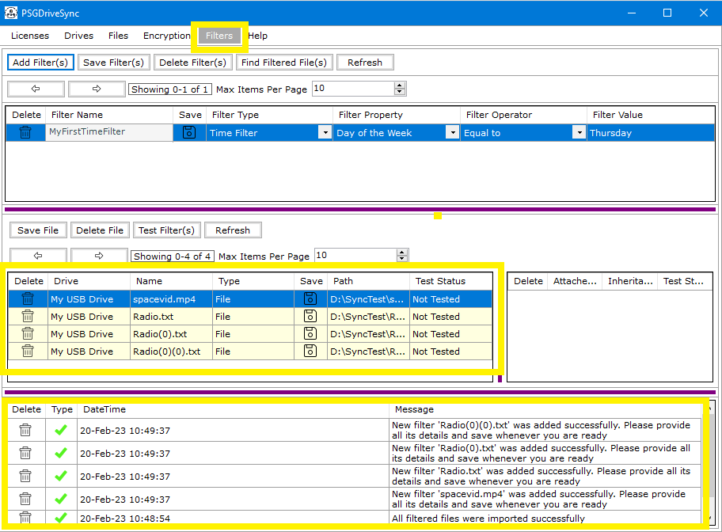

This functionality allows you to setup "Filters" on files and folders. These "Filters" are only used during sync operations and acts as pre-defined
conditions which are resolved at run time thus allowing the file or folder that they are linked to, to either sync or not sync. Filters do not have a
role to play in real time file operations.
What we do not acts as the step 1 in setting up filters on a file or folders. The other steps are listed in the "Filters" section.
Following are the steps needed to be performed in order to add filters on files or folders.
|
1 |
Right click on any file or folder of your choosing or select multiple file(s) or folder(s) and Right Click on any one of them and then click on "Send To Filters Window" in the right click menu. |
|
|
2 |
Click on "Filters" Window on the application menu bar and you should be able to see the files / folders that you had selected in step 1 above. These "Filtered" files or folders are not saved yet so you need to setup them up and save them in the "Filters" window before you can start using them in sync operation. |
 |